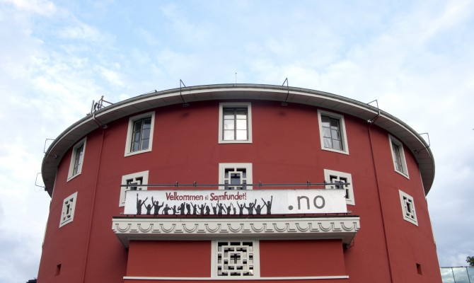

Hjem
Uteliv
Sub Menu 1
Sub Menu 2
Sub Menu 3
Studentliv
Sub Menu 1
Sub Menu 2
Fritid
Maps and places
Fritid
Tips and tricks
Kok
Hvorfor bruke tid på å gjøre øvingene selv?
youkok
youkok2
Steffekok
Aldri kok uten Gryte
larmel - NTNU Datateknikk
Eivinds Fysmat Kok
grimnes
